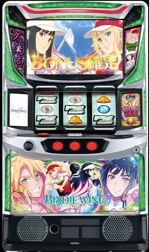

目次

スマスロ BIRDIE WINGBIRDIE WING -Golf Girls' Story- ｜ ユニバーサルブロス
ユニバーサルカップ＆BNカップの2大会制STが特徴。天井は10周期消化でバーディーボーナス（ST突入濃厚）。設定変更後は7周期に短縮されます。
スマスロ BIRDIE WING スペック・機械割
| 設定 | 初当たり | ST初当たり | 機械割 |
|---|---|---|---|
| 1 | 1/266.7 | 1/421.2 | 97.5% |
| 2 | 1/264.1 | 1/410.5 | 98.6% |
| 3 | 1/257.3 | 1/381.9 | 102.1% |
| 4 | 1/256.0 | 1/378.0 | 106.0% |
| 5 | 1/255.9 | 1/377.6 | 110.0% |
| 6 | 1/255.9 | 1/377.3 | 112.4% |
遊技時間別・理論差枚数の目安
| 設定 | 機械割 | 差枚数/1h | 差枚数/3h | 差枚数/5h | 差枚数/8h |
|---|---|---|---|---|---|
| 1 | |||||
| 2 | |||||
| 3 | |||||
| 4 | |||||
| 5 | |||||
| 6 |
スマスロ BIRDIE WING 小役確率
| 小役 | 通常時 | テンションUP中 | 備考 |
|---|---|---|---|
| イヴ役＋葵役合算 | 1/20.1 | 1/7.6 | 全設定共通 |
| 共闘役合算 | 1/992.9 | 1/175.2 | 全設定共通 |
| 全キャラ役合算 | 1/19.7 | 1/7.3 | 全設定共通 |
| リプレイ（ベル・キャラ役） | 1/4.4 | 1/2.9 | 全設定共通 |
小役確率は全設定共通のため設定判別には使用できません。ボーナス終了画面・枚数表示・ユニバプレートで総合判断してください。
スマスロ BIRDIE WING 設定判別ポイント
- ① ウイングボーナス終了画面カード：青背景＝デフォルト、緑背景（レオ/亜室）＝チャンス、赤背景（ユーハ）＝設定2以上確定。
- ② バウンティクイーンボーナス獲得枚数表示：246枚over＝偶数設定示唆、456枚over＝設定4以上示唆、555枚over＝設定5以上示唆、666枚over＝設定6確定。
- ③ ユニバプレート：銅＝設定2以上、銀＝設定3以上、金＝設定4以上、花火柄＝設定5以上、虹＝設定6確定。
スマスロ BIRDIE WING 天井・リセット
| 条件 | 天井 | 恩恵 |
|---|---|---|
| 通常天井 | 10周期消化 | バーディーボーナス（ST突入濃厚） |
| 設定変更後 | 7周期に短縮 | バーディーボーナス（ST突入濃厚） |
| 電源OFF→ON | 前日状態を引き継ぎ | — |
スマスロ BIRDIE WING ST詳細
ボーナス種類
| ボーナス | 図柄 | 純増 | G数 | 獲得枚数 |
|---|---|---|---|---|
| ウイングボーナス(RB) | 赤7/赤7/白7 | 約2.6枚/G | 20G | 約50枚 |
| バーディーボーナス(BB) | 赤7揃い | 約5.0枚/G | 20G | 約100枚（ST突入濃厚） |
| エピソードボーナス(EPB) | 白7揃い | 約5.0枚/G | 40G | 約200枚（ST+Vストック） |
ST「ユニバーサルカップ＆BNカップ」
| 項目 | 内容 |
|---|---|
| 構成 | 2大会制（ユニバーサルカップ→BNカップ） |
| 1日の構成 | 20G+α × 3日間のツアー方式 |
| 1戦ごと継続期待度 | 約65〜85% |
| 2大会制覇後 | 上位CZ「ビーナスバトル」→勝利で最上位ST「エクストラマッチ」 |
CZ期待度
| CZ種類 | 期待度 |
|---|---|
| バーディーチャレンジ全体 | 約50% |
| 弱CZ | 約40% |
| 強CZ | 約80% |
| オープニングチャレンジ | ボーナス以上確定 |
スマスロ BIRDIE WING 設定変更・朝一恩恵
| 項目 | 内容 |
|---|---|
| 設定変更後 | 天井が10周期→7周期に短縮 |
| 電源OFF→ON | 前日の状態を引き継ぎ（天井周期数等） |
設定推定ツール
ST回数を入力してください。ST初当たり確率から各設定の出現しやすさを推定します。
スマスロ BIRDIE WING よくある質問
スマスロ BIRDIE WINGの設定6機械割は？
設定6の機械割は112.4%です。設定1が97.5%で、設定3（102.1%）から機械割100%を超えます。ST搭載のAT機で、上位設定ほどST突入率・継続率が優遇されます。
スマスロ BIRDIE WINGの天井は何ゲームですか？
天井は10周期消化でバーディーボーナス（ST突入濃厚）が当選します。設定変更後は7周期に短縮されるため、朝一は天井恩恵を受けやすくなっています。1周期はスタンバイフェーズ20G＋ショットフェーズ18ホール+αで構成されます。
スマスロ BIRDIE WINGの設定判別で重要な指標は？
ウイングボーナス終了画面カード（赤背景ユーハ＝設定2以上確定）、バウンティクイーンボーナス獲得枚数表示（666枚over＝設定6確定、555枚over＝設定5以上）、ユニバプレート（虹＝設定6確定、花火柄＝設定5以上、金＝設定4以上）が重要です。
スマスロ BIRDIE WINGのやめ時はいつですか？
ST終了後にやめが基本です。ST終了後の周期はカップインストック1個が保証されているため、CZまでは回す価値があります。天井狙いの場合は7周期以降が目安です。
スマスロ BIRDIE WINGのST詳細は？
ユニバーサルカップとBNカップの2大会制で、1日20G+α×3日間のツアー方式です。1戦ごとの継続期待度は約65〜85%。2大会制覇で上位CZ「ビーナスバトル」に進み、勝利すると最上位ST「エクストラマッチ」に突入します。
スマスロ BIRDIE WINGのCZ期待度は？
バーディーチャレンジ全体の期待度は約50%で、弱CZが約40%、強CZが約80%です。オープニングチャレンジはボーナス以上確定の特殊CZです。
公式PR動画
（動画情報は準備中です）